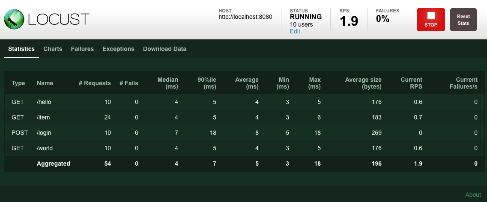

Locust：一个功能强大的开源压测工具
使用 Python 代码来定义用户行为，并让数以百万计的并发用户集中到你的系统上，来测试网站性能。
1. 工具介绍
Locust 是一个易于使用、可编写脚本和可扩展的网站性能测试工具。
在 Locust 中的核心思想就是可以让用户通过编写 Python 程序来进行性能测试，而不是使用 UI 界面点击或者其他的专属类型语言，这样可以让开发人员感到非常的友好，以及使用上面的便利。
- [1] 用 Python 编写用户测试场景
如果希望用户循环、执行某些条件行为或进行某些计算，只需使用 Python 提供的常规编程结构。Locust 在自己的 greenlet (一个轻量级进程/协同程序)中运行每个用户。这使您能够像编写普通(阻塞式) Python 代码一样编写测试，而不必使用回调或其他机制。因为您的场景是“仅仅是 python” ，所以您可以使用常规 IDE，并将测试作为常规代码进行版本控制(与使用 XML 或二进制格式的其他工具相反)。
- [2] 分布式和可扩展(支持高并发)
Locust 使得分布在多台机器上的负载测试很容易运行。它是基于事件的(使用 gevent)，这使得单个进程可以处理数千个并发用户。虽然可能有其他工具能够在给定的硬件上每秒执行更多请求，但是 Locust 用户的低开销使得它非常适合测试高并发的工作负载。
- [3] 基于 Web 的用户界面
Locust 有一个用户友好的网络界面，显示了实时测试的进展。您甚至可以在测试运行时更改负载。它也可以在没有用户界面的情况下运行，这使得它很容易用于 CI/CD 测试。
- [4] 可以测试任何系统
尽管 Locust 主要使用 web 站点/服务，但它可以用来测试几乎任何系统或协议。只需要为你想要测试的东西写一个客户端，或者探索一些由社区创建的东西。
- [5] 黑客特性
蝗虫是小的和非常灵活的，我们打算保持这种方式。如果您希望将报告数据发送到您喜欢的数据库和图形系统，那么可以将调用包装到 REST API 来处理系统的细节，或者运行一个完全自定义的加载模式，没有什么可以阻止您！
2. 安装使用
Locust 工具安装起来非常的简单！
- [1] 安装方式
# 使用pip安装
$ pip install locust
# 查看版本
$ locust -V
# 基于最新代码构建
$ pip3 install -e 'git://github.com/locustio/locust.git@master#egg=locust'
- [2] 项目结构
locust_project
├── common
├── __init__.py
├── auth.py
└── config.py
├── locustfile.py
└── requirements.txt
locust_project
├── common
├── __init__.py
├── auth.py
└── config.py
├── locustfiles
├── __init__.py
├── api.py
└── website.py
└── requirements.txt
- [3] 容器运行
# 直接运行
$ docker run -p 8089:8089 --name=Locust \
-v $PWD:/mnt/locust \
-f /mnt/locust/locustfile.py \
locustio/locust
# docker-compose.yml
version: "3"
services:
master:
container_name: locust_master
image: locustio/locust
ports:
- "8089:8089"
volumes:
- ./locust_app.py:/home/locust/locust_app.py
command: -f /home/locust/locust_app.py --master --host 'http://test.escapelife.site:9000' -u 400 -r 20 --run-time 2m --headless
networks:
- locust_network
worker1:
container_name: locust_worker1
image: locustio/locust
volumes:
- ./locust_app.py:/home/locust/locust_app.py
command: -f /home/locust/locust_app.py --worker --master-host master
networks:
- locust_network
worker2:
container_name: locust_worker2
image: locustio/locust
volumes:
- ./locust_app.py:/home/locust/locust_app.py
command: -f /home/locust/locust_app.py --worker --master-host master
networks:
- locust_network
networks:
locust_network:
3. 快速上手
官方文档中将从一个示例脚本开始讲解其运作过程！
Locust 文件都只是普通的 Python 脚本，可以从其他文件或者包中导入对应的函数和类等。模拟用户行为是由 Locust 库中的 HttpUser 类提供的，在开始测试运行时，Locust 将为每个并发用户创建一个类的实例。而 between 用来定义一个等待时间，使得模拟的用户在每个任务执行之后等待 1-2 秒。
对应测试任务的创建，是由 @task 这个装饰器来完成的。Locust 为每个正在运行的用户创建一个 greenlet 的微线程，它将调用这些方法。其中 client 属性，就是用来执行 HTTP 调用的。
我们可以设置 @task 装饰器的权重来改变任务的执行优先级，示例中使用 @task(3) 的方法就会比使用 @task 的方法执行的优先级大三倍，其更容易被执行到。
示例中的 on_start 方法将会在每一次用户请求时调用一次，这里设置的的是每次用户请求之前都先通过 用户名和密码 的方式登录服务，然后在执行对应 API 接口请求。
import time
from locust import HttpUser, task, between
class QuickstartUser(HttpUser):
wait_time = between(1, 2)
@task
def index_page(self):
self.client.get("/hello")
self.client.get("/world")
@task(3)
def view_item(self):
for item_id in range(10):
# 请求分组到/item下面
self.client.get(f"/item?id={item_id}", name="/item")
time.sleep(1)
def on_start(self):
self.client.post("/login", json={"username":"foo", "password":"bar"})
# 当前目录
$ locust
# 执行对应文件
$ locust -f my_locust_file.py
一旦执行了上面的命令，就会启动 Locust 的 UI 界面，我们可以打开任意一个网页浏览器，访问 http://127.0.0.1:8089 地址，即可进入如下所示的界面。

填写上图所示的信息，包含自动化测试的 用户数并发数、自动化测试的 时间间隔频率 以及需要进行自动化测试的网站访问地址。填写完毕之后，将自动进行测试。

4. 运行方式
主要介绍无头模式和分布式部署运行方式！
- [1] 无头模式
当然也可以使用 --headless 这个命令行参数直接启动测试，而不是用 Web 界面。
| 编号 | 命令行参数 | 参数含义 |
|---|---|---|
| 1 | --headless |
无头模式 |
| 2 | -u |
设置用户数量 |
| 3 | -r |
设置每秒的并发数量 |
| 4 | -t/--run-time |
设置测试时间限制 |
| 5 | --stop-timeout |
允许任务关闭时完整退出 |
| 6 | --csv |
输出 CSV 格式的测试报告 |
# 无界面模式
$ locust --headless
# 设置用户数量和并发数量
$ locust --headless -u 1000 -r 100
# 设置测试时间限制
$ locust --headless -u 1000 -r 100 --run-time 1h30m
# 任务完整退出
$ locust --headless -u 1000 -r 100 --run-time 1h30m --stop-timeout 99
# 输出CSV格式的测试报告
$ locust --csv=example --headless -t10m
- [2] 分布式部署
如果需要跨多个 Python 进程或机器运行 Locust 工具的话，可以使用 --master 这个命令行参数启动单个 Locust 的 master 进程，然后使用 --worker 这个命令行参数启动任意数量 Locust 的 worker 进程。
| 分布式参数 | 参数含义 | 参数默认值 |
|---|---|---|
--master |
设置为主节点 | - |
--worker |
设置为子节点 | - |
--master-host=X.X.X.X |
设置主节点的 IP 地址 | 127.0.0.1 |
--master-port=XX |
设置主节点的端口号 | 5557 |
--master-bind-host=X.X.X.X |
主节点将绑定到哪个网络接口 | * |
--master-bind-port=XX |
主节点将侦听哪些网络端口 | 5557 |
--expect-workers=X |
在启动主节点时使用 headless 模式 | - |
# one master
$ locust -f my_locustfile.py --master
# more worker
$ locust -f my_locustfile.py --worker --master-host=192.168.0.14
$ locust -f my_locustfile.py --worker --master-host=192.168.0.14
$ locust -f my_locustfile.py --worker --master-host=192.168.0.14
- [3] 作为库运行
import gevent
from locust import HttpUser, task, between
from locust.env import Environment
from locust.stats import stats_printer, stats_history
from locust.log import setup_logging
setup_logging("INFO", None)
class User(HttpUser):
wait_time = between(1, 3)
host = "https://docs.locust.io"
@task
def my_task(self):
self.client.get("/")
@task
def task_404(self):
self.client.get("/non-existing-path")
# setup Environment and Runner
env = Environment(user_classes=[User])
env.create_local_runner()
# start a WebUI instance
env.create_web_ui("127.0.0.1", 8089)
# start a greenlet that periodically outputs the current stats
gevent.spawn(stats_printer(env.stats))
# start a greenlet that save current stats to history
gevent.spawn(stats_history, env.runner)
# start the test
env.runner.start(1, spawn_rate=10)
# in 60 seconds stop the runner
gevent.spawn_later(60, lambda: env.runner.quit())
# wait for the greenlets
env.runner.greenlet.join()
# stop the web server for good measures
env.web_ui.stop()
5. 进阶指导
如何更好的编写 Locust 文件呢？
我们需要知道的是，在编写 Locust 文件的时候，我们创建的类必须继承自 User 类才可以，而在 User 类中我们可以定义一些常见的属性。一个用户类代表一个用户，Locust 将为每个被模拟的用户产生一个 User 类的实例。
- [1] 等待时间 - wait_time
在 User 中，wait_time 方法用于明确模拟用户在执行任务之间应等待多长时间，并且提供了三个内置的等待时间函数。
| 编号 | 内置等待时间函数 | 对应等待时间函数含义 |
|---|---|---|
| 1 | between |
在最小和最大值时间内随机 |
| 2 | constant |
确保在一定时间内保持恒定 |
| 3 | constant_pacing |
确保任务最多每 X 秒运行一次 |
让每个用户在每次任务执行之间等待 0.5 到 10 秒。
from locust import User, task, between
class MyUser(User):
wait_time = between(0.5, 10)
@task
def my_task(self):
print("executing my_task")
也可以直接在类上声明自己的 wait_time 方法。例如，下面的 User 类将休眠一秒钟，然后两秒钟，然后三秒钟，等等。
from locust import User
class MyUser(User):
last_wait_time = 0
def wait_time(self):
self.last_wait_time += 1
return self.last_wait_time
...
- [2] 权重属性 - weight
如果文件中存在多个用户类，并且命令行上没有指定任何用户类，Locust 将生成相同数量的每个用户类。你也可以通过传递命令行参数来指定在同一个 locustfile 中使用哪个用户类。
# 指定运行WebUser和MobileUser类
$ locust -f locust_file.py WebUser MobileUser
如果您希望模拟某种类型的更多用户，可以在这些类上设置一个权重属性。例如，网络用户比手机用户的可能性高三倍。
# 网络用户
class WebUser(User):
weight = 3
...
# 手机用户
class MobileUser(User):
weight = 1
...
- [3] 主机属性 - host
Host 属性是要加载的主机的 URL 前缀，这是在 Locust 的 web UI 或命令行中指定的，在 Locust 启动时也是可以通过使用 --host 选项指定的。
需要注意的是，如果有人在用户类中声明了一个 host 属性，那么在命令行或 web 请求中没有指定 host 的情况下将使用该属性。
$ locust --host 127.0.0.1
- [4] 任务属性 - tasks
User 类可以使用 @task 装饰器，将任务声明为其下方的方法，但也可以使用 tasks 属性指定任务，下面将详细介绍这一属性。
from locust import User, task, constant
class MyUser(User):
wait_time = constant(1)
@task
def my_task(self):
print("User instance (%r) executing my_task" % self)
from locust import User, task, between
class MyUser(User):
wait_time = between(5, 15)
@task(3)
def task1(self):
pass
@task(6)
def task2(self):
pass
另一种定义 User 任务的方法是设置 tasks 属性。Tasks 属性是 Tasks 的列表或者是一个 <Task:int> 的字典，其中 Task 是 python 可调用的类或 TaskSet 类。如果任务是一个普通的 python 函数，那么它们会接收一个参数，这个参数就是执行任务的 User 实例。
from locust import User, constant
def my_task(user):
pass
class MyUser(User):
tasks = [my_task]
wait_time = constant(1)
如果将 tasks 属性指定为列表，则每次执行任务时，都将从 tasks 属性中随机选择任务。但是，如果任务是 dict (使用调用表作为键，使用整型表作为值) 则将随机选择要执行的任务，但使用 int 作为比率。即 my_task 任务被执行的可能性是 another_task 任务的 3 倍。
from locust import User, constant
def my_task(user):
pass
def another_task(user):
pass
class MyUser(User):
tasks = {my_task: 3, another_task: 1}
wait_time = constant(1)
通过 @tag 装饰器标记任务，即可以使用 --tags 和 --exclude-tags 命令行参数来挑选测试期间执行的任务。
from locust import User, constant, task, tag
class MyUser(User):
wait_time = constant(1)
@tag('tag1')
@task
def task1(self):
pass
@tag('tag1', 'tag2')
@task
def task2(self):
pass
@tag('tag3')
@task
def task3(self):
pass
@task
def task4(self):
pass
# task1 task2
$ locust -f locust_file.py --tags tag1
# task2 task3
$ locust -f locust_file.py --tags tag2 tag3
# task1 task2 task4
$ locust -f locust_file.py --exclude-tags tag3
- [5] 环境属性 - environment
对用户运行环境的引用，使用它来与环境或其中包含的运动员进行交互。例如，阻止运行者使用任务方法。如果运行一个独立的 locust 实例，这将停止整个运行。如果在工作者节点上运行，它将停止该特定节点。
self.environment.runner.quit()
- [6] 开始停止 - on_start/on_stop
用户和 taskset 可以声明 on_start 方法和 on_stop 方法。用户在开始运行时调用 on_start 方法，在停止运行时调用 on_stop 方法。对于 TaskSet 来说，当模拟用户开始执行 TaskSet 时调用 on_start 方法，当模拟用户停止执行 TaskSet 时调用 on_stop 方法(调用interrupt()或者用户死亡)。
from locust import HttpUser, task, between
class QuickstartUser(HttpUser):
def on_start(self):
self.client.post("/login", json={"username":"foo", "password":"bar"})
...
6. 相关配置
主要介绍 locust 命令的相关参数！
- 配置
Locust如何运行的最直接的方法是通过命令行参数。
$ locust --help
Usage: locust [OPTIONS] [UserClass ...]
Common options:
-h, --help show this help message and exit
-f LOCUSTFILE, --locustfile LOCUSTFILE
Python module file to import, e.g. '../other.py'.
Default: locustfile
--config CONFIG Config file path
-H HOST, --host HOST Host to load test in the following format:
http://10.21.32.33
-u NUM_USERS, --users NUM_USERS
Number of concurrent Locust users. Primarily used
together with --headless
-r SPAWN_RATE, --spawn-rate SPAWN_RATE
The rate per second in which users are spawned.
Primarily used together with --headless
-t RUN_TIME, --run-time RUN_TIME
Stop after the specified amount of time, e.g. (300s,
20m, 3h, 1h30m, etc.). Only used together with
--headless
-l, --list Show list of possible User classes and exit
Web UI options:
--web-host WEB_HOST Host to bind the web interface to. Defaults to '*'
(all interfaces)
--web-port WEB_PORT, -P WEB_PORT
Port on which to run web host
--headless Disable the web interface, and instead start the load
test immediately. Requires -u and -t to be specified.
--web-auth WEB_AUTH Turn on Basic Auth for the web interface. Should be
supplied in the following format: username:password
--tls-cert TLS_CERT Optional path to TLS certificate to use to serve over
HTTPS
--tls-key TLS_KEY Optional path to TLS private key to use to serve over
HTTPS
Master options:
Options for running a Locust Master node when running Locust distributed. A Master node need Worker nodes that connect to it before it can run load tests.
--master Set locust to run in distributed mode with this
process as master
--master-bind-host MASTER_BIND_HOST
Interfaces (hostname, ip) that locust master should
bind to. Only used when running with --master.
Defaults to * (all available interfaces).
--master-bind-port MASTER_BIND_PORT
Port that locust master should bind to. Only used when
running with --master. Defaults to 5557.
--expect-workers EXPECT_WORKERS
How many workers master should expect to connect
before starting the test (only when --headless used).
Worker options:
Options for running a Locust Worker node when running Locust distributed.
Only the LOCUSTFILE (-f option) need to be specified when starting a Worker, since other options such as -u, -r, -t are specified on the Master node.
--worker Set locust to run in distributed mode with this
process as worker
--master-host MASTER_NODE_HOST
Host or IP address of locust master for distributed
load testing. Only used when running with --worker.
Defaults to 127.0.0.1.
--master-port MASTER_NODE_PORT
The port to connect to that is used by the locust
master for distributed load testing. Only used when
running with --worker. Defaults to 5557.
Tag options:
Locust tasks can be tagged using the @tag decorator. These options let specify which tasks to include or exclude during a test.
-T [TAG [TAG ...]], --tags [TAG [TAG ...]]
List of tags to include in the test, so only tasks
with any matching tags will be executed
-E [TAG [TAG ...]], --exclude-tags [TAG [TAG ...]]
List of tags to exclude from the test, so only tasks
with no matching tags will be executed
Request statistics options:
--csv CSV_PREFIX Store current request stats to files in CSV format.
Setting this option will generate three files:
[CSV_PREFIX]_stats.csv, [CSV_PREFIX]_stats_history.csv
and [CSV_PREFIX]_failures.csv
--csv-full-history Store each stats entry in CSV format to
_stats_history.csv file. You must also specify the '--
csv' argument to enable this.
--print-stats Print stats in the console
--only-summary Only print the summary stats
--reset-stats Reset statistics once spawning has been completed.
Should be set on both master and workers when running
in distributed mode
Logging options:
--skip-log-setup Disable Locust's logging setup. Instead, the
configuration is provided by the Locust test or Python
defaults.
--loglevel LOGLEVEL, -L LOGLEVEL
Choose between DEBUG/INFO/WARNING/ERROR/CRITICAL.
Default is INFO.
--logfile LOGFILE Path to log file. If not set, log will go to
stdout/stderr
Other options:
--show-task-ratio Print table of the User classes' task execution ratio
--show-task-ratio-json
Print json data of the User classes' task execution
ratio
--version, -V Show program's version number and exit
--exit-code-on-error EXIT_CODE_ON_ERROR
Sets the process exit code to use when a test result
contain any failure or error
-s STOP_TIMEOUT, --stop-timeout STOP_TIMEOUT
Number of seconds to wait for a simulated user to
complete any executing task before exiting. Default is
to terminate immediately. This parameter only needs to
be specified for the master process when running
Locust distributed.
User classes:
UserClass Optionally specify which User classes that should be
used (available User classes can be listed with -l or
--list)
- 大多数可以通过命令行参数设置的选项也可以通过环境变量设置。
$ LOCUST_LOCUSTFILE=custom_locustfile.py locust
- 也可以通过配置文件设置，同时可使用
--config指定一个配置文件。 Locust将默认查找~/.Locust.conf和./Locust.conf这两个配置。~/locust.conf->./locust.conf->--conf->env vars->cmd args
# master.conf in current directory
locustfile = locust_files/my_locust_file.py
headless = true
master = true
expect-workers = 5
host = http://target-system
users = 100
spawn-rate = 10
run-time = 10m
# run server
$ locust --config=master.conf
7. 高级特性
Locust 也可以设置很多钩子函数(Events)，但是这里我们不做涉及。
- [1] HttpUser - Http 用户类
HttpUser 是最常用的用户，它添加了一个用于发出 HTTP 请求的客户端属性。
from locust import HttpUser, task, between
class MyUser(HttpUser):
wait_time = between(5, 15)
@task(4)
def index(self):
self.client.get("/")
@task(1)
def about(self):
self.client.get("/about/")
- [2] HttpSession - 客户端属性
client 是 HttpSession 的一个实例，而 HttpSession 是 requests.Session 的子类和包装器，因此它的特性被很好地记录下来并且应该为许多人所熟悉。HttpSession 添加的主要作用就是将请求结果报告到 Locust 中，包括成功和失败，响应时间，响应长度，名称。其中，包含所有 HTTP 方法，比如 get、post、put 等等。
类似于 requests.Session 一样，它在请求之间保存 cookie 下来，所以可以很容易地用于登录网站。下面示例中，发出一个 POST 请求，查看响应并隐式重用我们为第二个请求获得的任何会话 cookie。
response = self.client.post("/login", {"username":"testuser", "password":"secret"})
print("Response status code:", response.status_code)
print("Response text:", response.text)
response = self.client.get("/my-profile")
- [3] Vali Responses - 验证响应
如果 HTTP 响应代码是 OK(<400) 的，那么请求被认为是成功的，但是对响应进行一些额外的验证通常是有用的。通过使用 catch_response 参数、with-statement 和对 response.failure() 的调用，可将请求标记为 failed。
# 响应不正确时可以将其标记为失败
with self.client.get("/", catch_response=True) as response:
if response.text != "Success":
response.failure("Got wrong response")
elif response.elapsed.total_seconds() > 0.5:
response.failure("Request took too long")
# 即使响应代码不正确也可将请求标记为成功
with self.client.get("/does_not_exist/", catch_response=True) as response:
if response.status_code == 404:
response.success()
# 可以通过抛出异常然后让with语句捕获异常
from locust.exception import RescheduleTask
...
with self.client.get("/does_not_exist/", catch_response=True) as response:
if response.status_code == 404:
raise RescheduleTask()
- [4] Http Proxy - 代理设置
为了提高性能，我们通常不会给请求配置 HTTP 代理设置，即对应属性的默认值为 False。如果我们需要设置代理的话，可以手动设置 locust_instance.client.trust_env 变量为 True 即可。
locust_instance.client.trust_env = True
- [5] Grouping Requests - URL 请求分组
这是非常常见的，在网站的网址包含某种动态参数，将这些 url 按用户统计数据进行分组通常是有意义的。这可以通过向 HttpSession 的不同请求方法传递一个 name 参数来实现。
# grouped under: /blog/?id=[id]
for i in range(10):
self.client.get("/blog?id=%i" % i, name="/blog?id=[id]")
- [6] FastHttpUser - 更快的客户端
使用更快的 HTTP 客户端提高 Locust 的性能。Locust 默认使用 python-requests 库来进行 HTTP 客户端的封装，使用的原因非常简单就是因为我们很熟悉。所以，在大多数情况下，建议继承 HttpUser 这个类。
如果我们打算运行真正大规模测试的话，在 Locust 中附带了一个备用 HTTP 客户端，那就是 FastHttpUser 了。此客户端的速度明显提高，并且我们发现执行 HTTP 请求的性能提高了 5-6 倍。这并不一定意味着每个 CPU 内核可以模拟的用户数量将自动增加 5-6 倍，因为这还取决于负载测试脚本的其他功能。
from locust import task, between
from locust.contrib.fasthttp import FastHttpUser
class MyUser(FastHttpUser):
wait_time = between(2, 5)
@task
def index(self):
response = self.client.get("/")
8. 示例代码
获取更新示例参考代码，请查看官方仓库！
- [1] Simple Example
from locust import HttpUser, TaskSet, task, between
def index(l):
l.client.get("/")
def stats(l):
l.client.get("/stats/requests")
class UserTasks(TaskSet):
tasks = [index, stats]
@task
def page404(self):
self.client.get("/does_not_exist")
class WebsiteUser(HttpUser):
host = "http://127.0.0.1:8089"
wait_time = between(2, 5)
tasks = [UserTasks]
- [2] With HTML Parsing Example
import random
from locust import HttpUser, between, task
from pyquery import PyQuery
class AwesomeUser(HttpUser):
host = "https://docs.locust.io/en/latest/"
wait_time = between(10, 600)
def on_start(self):
self.wait()
self.index_page()
self.urls_on_current_page = self.toc_urls
@task(10)
def index_page(self):
r = self.client.get("")
pq = PyQuery(r.content)
link_elements = pq(".toctree-wrapper a.internal")
self.toc_urls = [l.attrib["href"] for l in link_elements]
@task(50)
def load_page(self):
url = random.choice(self.toc_urls)
r = self.client.get(url)
pq = PyQuery(r.content)
link_elements = pq("a.internal")
self.urls_on_current_page = [l.attrib["href"] for l in link_elements]
@task(30)
def load_sub_page(self):
url = random.choice(self.urls_on_current_page)
r = self.client.get(url)
- [3] Nested TaskSets Example
from locust import HttpUser, TaskSet, task, between
class ForumThread(TaskSet):
pass
class ForumPage(TaskSet):
wait_time = between(10, 300)
tasks = {
ForumThread:3
}
@task(3)
def forum_index(self):
pass
@task(1)
def stop(self):
self.interrupt()
class AboutPage(TaskSet):
pass
class WebsiteUser(HttpUser):
wait_time = between(5, 15)
tasks = {
ForumPage: 20,
AboutPage: 10,
}
@task(10)
def index(self):
pass
- [4] Browse Docs Sequence Test
import random
from locust import HttpUser, SequentialTaskSet, task, between
from pyquery import PyQuery
class BrowseDocumentationSequence(SequentialTaskSet):
def on_start(self):
self.urls_on_current_page = self.toc_urls = None
@task
def index_page(self):
r = self.client.get("/")
pq = PyQuery(r.content)
link_elements = pq(".toctree-wrapper a.internal")
self.toc_urls = [l.attrib["href"] for l in link_elements]
self.client.get("/favicon.ico")
@task
def load_page(self, url=None):
url = random.choice(self.toc_urls)
r = self.client.get(url)
pq = PyQuery(r.content)
link_elements = pq("a.internal")
self.urls_on_current_page = [l.attrib["href"] for l in link_elements]
@task
def load_sub_page(self):
url = random.choice(self.urls_on_current_page)
r = self.client.get(url)
class AwesomeUser(HttpUser):
tasks = [BrowseDocumentationSequence]
host = "https://docs.locust.io/en/latest/"
wait_time = between(20, 600)
- [5] Dynamice User Credentials
from locust import HttpUser, TaskSet, task, between
USER_CREDENTIALS = [
("user1", "password"),
("user2", "password"),
("user3", "password"),
]
class UserBehaviour(TaskSet):
def on_start(self):
if len(USER_CREDENTIALS) > 0:
user, passw = USER_CREDENTIALS.pop()
self.client.post("/login", {"username": user, "password": passw})
@task
def some_task(self):
self.client.get("/protected/resource")
class User(HttpUser):
tasks = [UserBehaviour]
wait_time = between(5, 60)
- [6] Multiple Hosts
import os
from locust import HttpUser, TaskSet, task, between
from locust.clients import HttpSession
class MultipleHostsUser(HttpUser):
abstract = True
def __init__(self, *args, **kwargs):
super().__init__(*args, **kwargs)
self.api_client = HttpSession(base_url=os.environ["API_HOST"])
class UserTasks(TaskSet):
@task
def index(self):
self.user.client.get("/")
@task
def index_other_host(self):
self.user.api_client.get("/stats/requests")
class WebsiteUser(MultipleHostsUser):
host = "http://127.0.0.1:8089"
wait_time = between(2, 5)
tasks = [UserTasks]